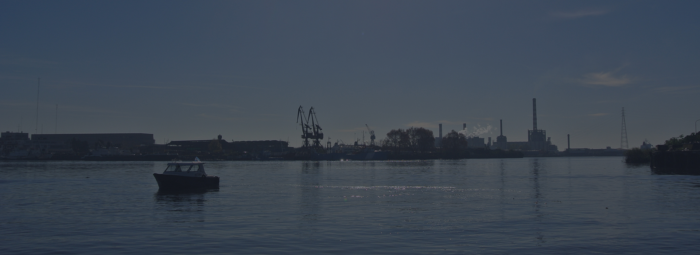
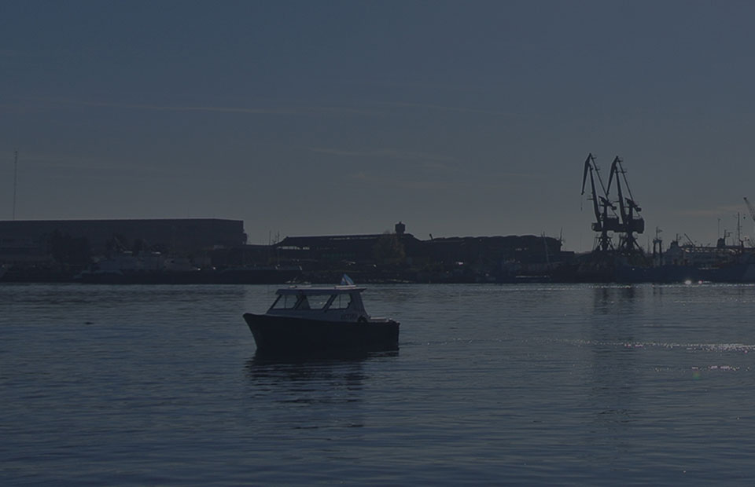
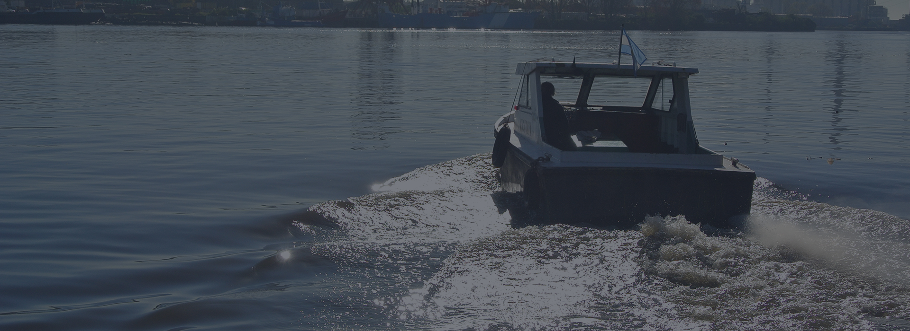
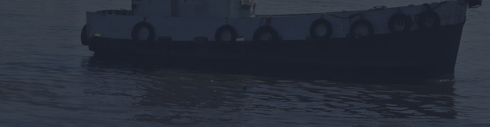

Amarre / Desamarre
Se recogen las amarras del buque para portarlas y fijarlas al muelle
Ver másPuerto de Dock Sud
(011) 5263-7424

SPADARI S.R.L.
Contamos con embarcaciones para los servicios marítimos que brindamos
Conocé los servicios que tenemos para ofrecerte
Somos una empresa de servicios marítimos, fundada en 1950 con el nombre de Spadari Hermanos. Iniciamos nuestras actividades en el puerto de Dock Sud, donde hoy se mantiene base de operaciones.
Contamos con varias embarcaciones, apropiadas para diferentes tipos de servicios. Nuestro ámbito de operación se extiende desde los Sitios del Canal Dock Sud, Muelles de Dársenas de Inflamable, Terminales, Tandanor, Dársena Norte y Central Puerto hasta la Dársena F del Puerto de Buenos Aires.


Los distintos tipos de embarcaciones con los que contamos se ajustan a los servicios que tenemos para ofrecerte. Conocelos acá
Ponemos a tu disposición las mejores embarcaciones para poder ofrecerte el mejor servicio
Ver embarcaciones